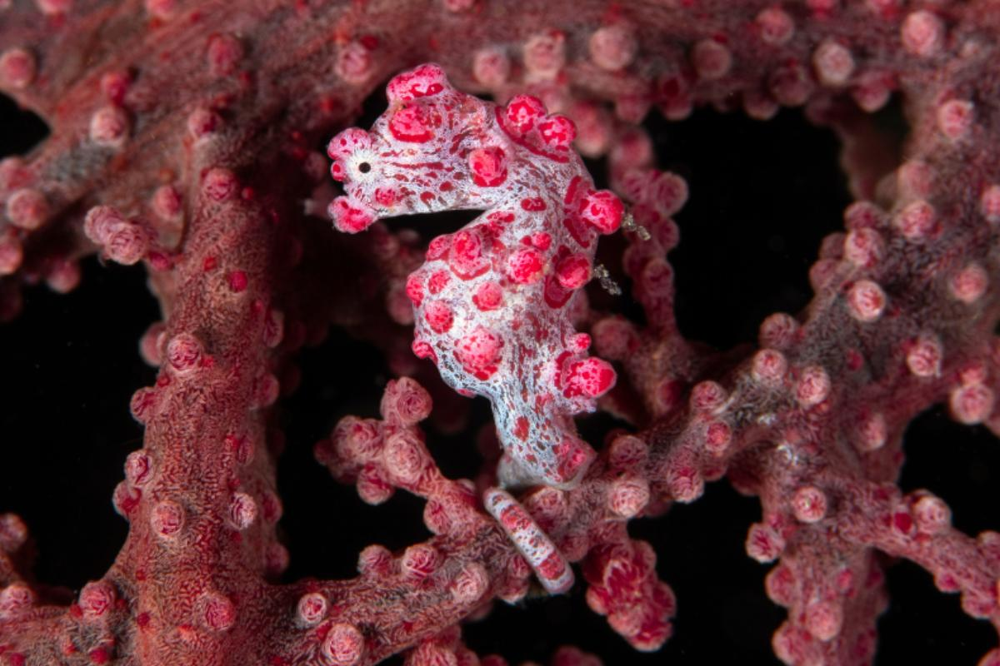
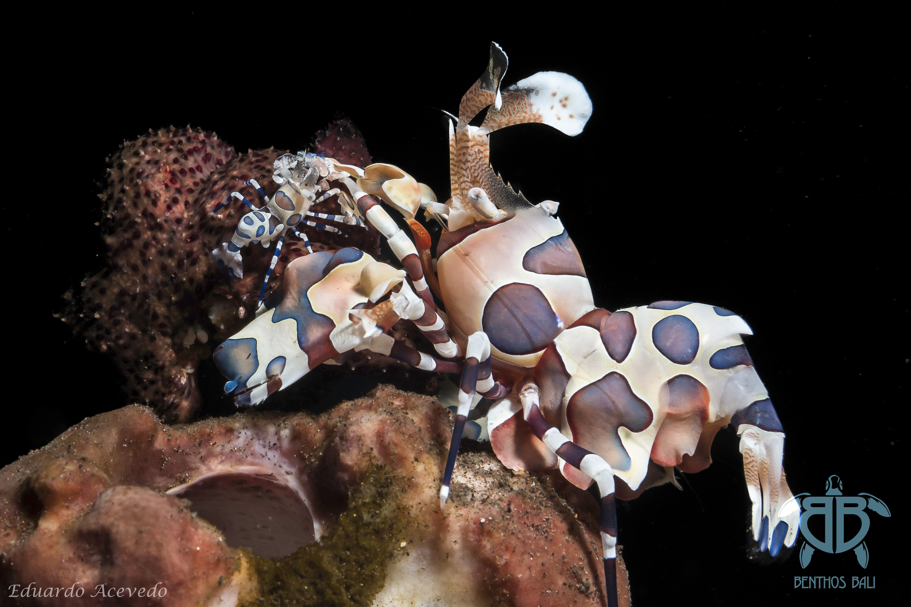

Pecio Liberty
El pecio Liberty es, sin duda, el sitio de buceo más famoso de Bali. Se encuentra en las aguas poco profundas de la bahía de Tulamben y es fácilmente accesible desde la costa.
Tiene una eslora total de más de 100 metros, fragmentada y con pocas partes del barco separadas. Su proa se encuentra a tan solo 4 metros de profundidad, mientras que su popa alcanza los 28 metros de profundidad.
Ahora está completamente cubierto de corales blandos y duros. Diversos tipos de esponjas y gorgonias crecen en sus laderas. Lo más interesante es un gran banco de jureles que se encuentra alrededor del naufragio.
La vida marina es muy abundante. Podemos ver muchos bancos de peces como labios dulces, peces murciélago y peces unicornio. Una solitaria barracuda, algunos meros y enormes morenas, además de una interesante fauna macro que también se puede encontrar alrededor del naufragio. Se dice que es el naufragio más seguro del mundo, lo que lo convierte en un lugar ideal para buceadores de todos los niveles, además de una magnífica inmersión nocturna donde se puede disfrutar de la increíble vida nocturna de las aguas de Bali. Es un paraíso para los fotógrafos.
Jardín de coral
En medio de la bahía de Tulamben, paralelo a la costa en sus aguas poco profundas se extiende un saludable arrecife llamado por los buceadores "jardín de coral".
Sin duda, la parte más interesante de esta inmersión es la zona poco profunda, donde encontraremos acropora pulchea y numerosas anémonas que forman este arrecife. La abundancia de anémonas es tal que nos da la sensación de estar viendo la mayoría de las especies de peces payaso del planeta. Esta inmersión también es un excelente lugar para avistar anguilas lista, tanto adultas como juveniles, peces león y, con un poco de suerte, algunos meros e incluso tiburones de arrecife más pequeños.
En la zona más profunda, podremos observar bancos de jureles y fusileros. El fondo de la zona más profunda es de arena volcánica y está cubierto de grandes esponjas barril. La suave corriente habitual de la zona poco profunda nos impulsará hacia el final de la inmersión, haciéndola muy relajante. Para todos los niveles.


Seraya
Seraya Secrets es conocido hoy en día como el lugar predilecto de naturalistas y fotógrafos submarinos. Para un buceador novato que aún no está acostumbrado a la minuciosa belleza de la macrovida marina del Indo-Pacífico, comparado con el naufragio, el lugar bien podría estar muerto. Sin embargo, con la mirada experta de un naturalista o fotógrafo experimentado, Seraya Secrets se convierte en el paraíso de las criaturas.
comienza en cuanto uno logra sumergirse en agua hasta las rodillas: cangrejos de orilla, morenas juveniles, peces león, camarones anémona, camarones aguja, cangrejos cebra, camarones coral, nudibranquios, peces pipa fantasma, cangrejos boxer, camarones Coleman, peces rana, pulpos miméticos, cangrejos decoradores, peces escorpión; la lista es interminable. El raro camarón arlequín (Hymenocera picta)
El sitio está salpicado de pequeñas rocas o fragmentos de coral que permiten filmar a las estrellas de plumas y formar miniecosistemas individuales. Algunos de los sistemas más grandes se han convertido en estaciones de limpieza donde se limpian la boca y las branquias de peces como los meros coralinos, los labios dulces o, en los sistemas más grandes, las morenas, mientras los diminutos camarones eliminan parásitos en perfecta simbiosis.
Tenemos más puntos de buceo y por supuesto nos adaptamos a ti!!
Contáctanos para más información
Contactar
Síguenos en nuestras redes